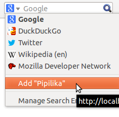

প্লাগইনটি ব্যবহার করে আপনি ফায়ারফক্স ও অন্যান্য ওপেনসার্চ সমর্থিত ব্রাউজারের সার্চ বার থেকেই পিপিলিকা দিয়ে সার্চ করতে পারবেন।
একটি অনিরুদ্ধ অধিকারী প্রোডাকশন!
সার্চ বারের বাম দিকের লোগোর ওপর ক্লিক করি।

মেনু হতে Add Pipilika তে ক্লিক করি।
পিপিলিকা সার্চের জন্য তৈরি!